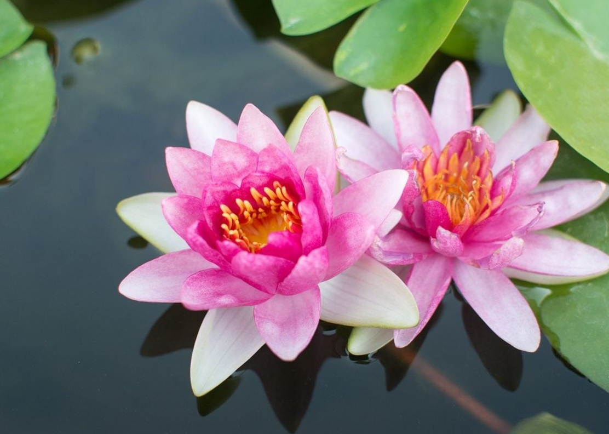

AQUATIC FLOWERING PLANT
Sacred Lotus
Nelumbo nucifera
A remarkable aquatic plant whose flowers rise above the water while its leaves float gracefully across the surface.
LIFE IN WATER
💧 An Aquatic Survivor
The sacred lotus is specially adapted to life in ponds, lakes and slow-moving freshwater habitats.
Floating Leaves
Large leaves can float on the water surface, allowing the plant to receive sunlight.
Long Stems
Flexible stalks connect the leaves and flowers to the underwater parts of the plant.
Underground Rhizome
The rhizome grows in muddy soil beneath the water and stores nutrients for the plant.
THE FLOWER
🌸 A Flower Above the Water
Lotus flowers are usually large and showy, with numerous petals surrounding the central structure. They rise above the water on strong stalks.
BOTANICAL PROFILE